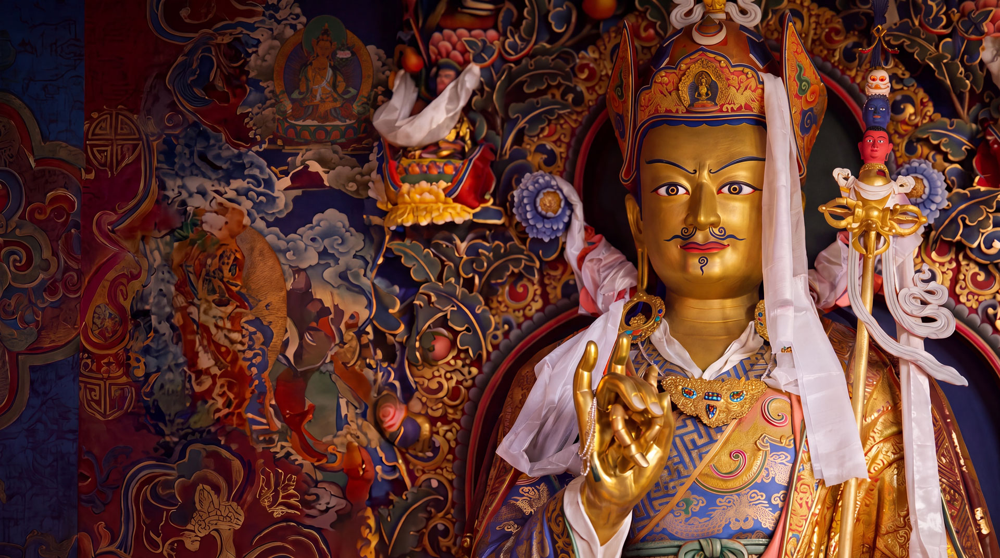

The 2026 30-Day Retreat
From $599Discounted for members
The Jewel Maker: The Reverberation of Sound. May 22 – Jun 20, 2026, at Pemako Retreat Center, San Diego, or online via Zoom with recorded access. Led by Lama Michael Gregory.
Request Registration Info